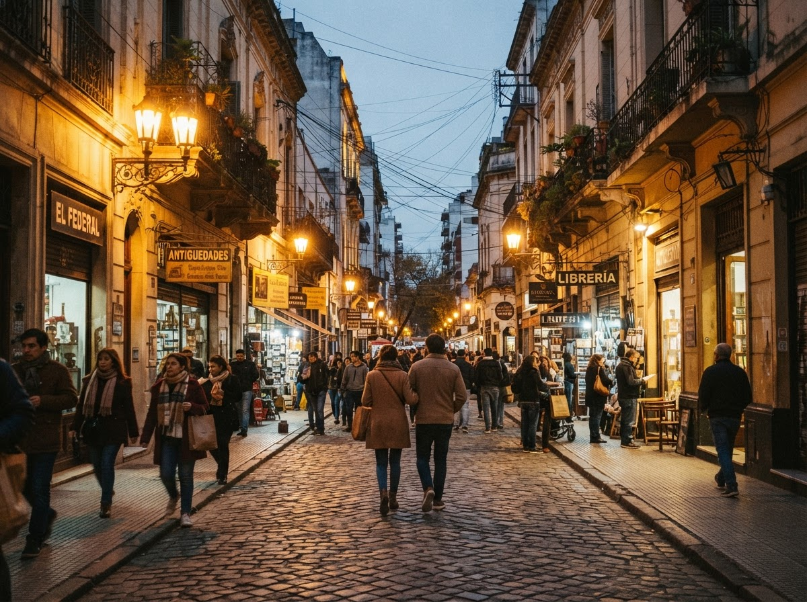

Cuándo ir
Preferí las horas de luz para las caminatas. Antes de salir, consultá los horarios oficiales de cada espacio y la programación del día.
Guía cultural porteña · Temporada 2026
Cinco maneras de leer la ciudad de la furia. Elegí una pasión, seguí las señales y descubrí las historias secretas que viven entre una esquina emblemática y la siguiente.

Clubes de barrio, potreros sagrados y la pasión ritual que organiza la semana.
Explorar recorrido →Fachadas imponentes, palacios olvidados y cúpulas para descifrar un siglo de ambición.
Explorar recorrido →Bodegones eternos, viejos mercados de abasto y fuegos modernos que cuentan migraciones.
Explorar recorrido →Murales inmensos y grafitis que guardan las voces vivas y rebeldes de la calle.
Explorar recorrido →Salas históricas y locaciones míticas para volver a mirar Buenos Aires a través del lente.
Explorar recorrido →Trazá tu propio camino
Ubicá los puntos de interés y combiná las paradas según tu tiempo. El orden de cada guía es una sugerencia: vos elegís por dónde empezar.
Explorar el mapa →Planificá una experienciaPreferí las horas de luz para las caminatas. Antes de salir, consultá los horarios oficiales de cada espacio y la programación del día.
Subte, colectivo y caminata. Combiná los tramos según tu ritmo y llevá tu tarjeta SUBE para los traslados.
Calzado cómodo, botella de agua y espacio para la sorpresa. Respetá las obras, los vecinos y los espacios que visites.